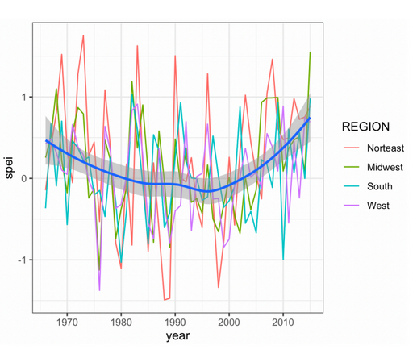
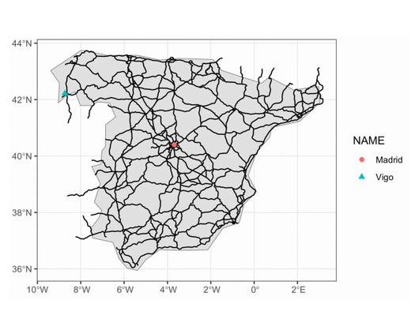
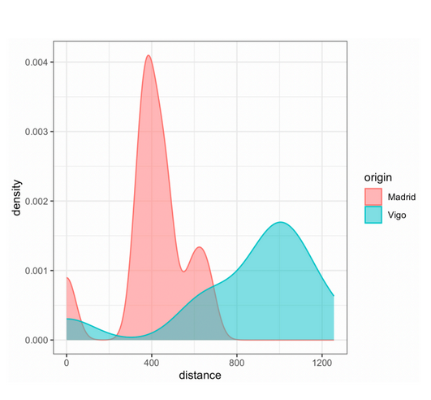
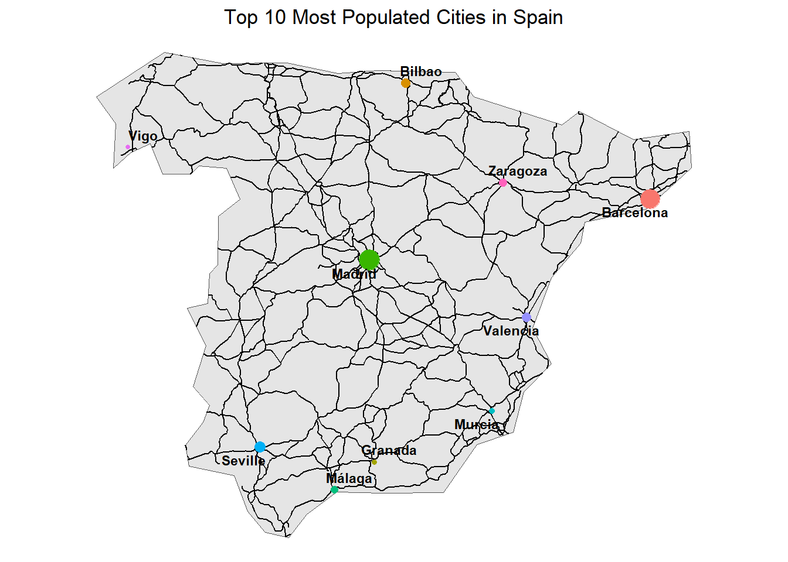
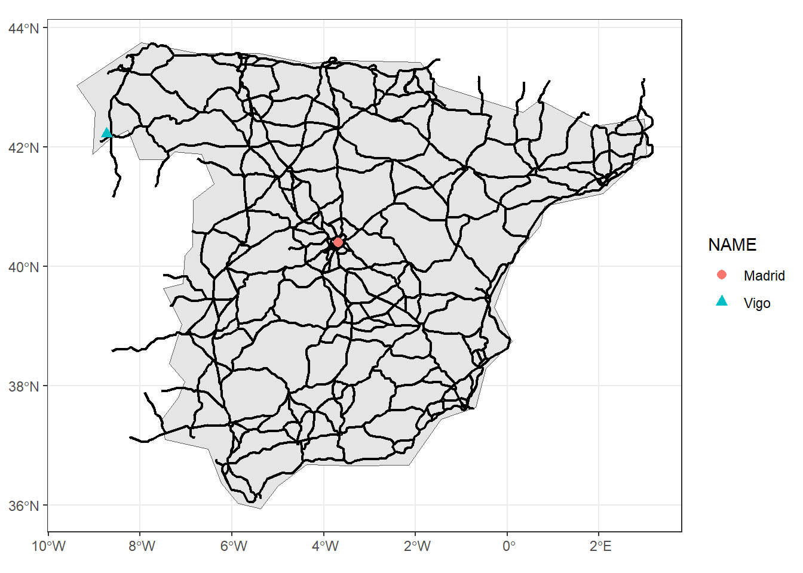

# load in libraries
rm(list=ls())
library(terra) # raster operations
library(exactextractr) # exact_extract() for distances
library(gdistance) # fast distance() formula for geo data
library(sf) # vector operations
library(spData) # geo data
library(tidyverse) # NOTE: Conflict -- tidyr::extract() masks terra::extract()
library(glue) # printf() syntax
library(spDataLarge) # geo data
library(ggrepel) # add labels to ggplot
library(tidyterra) # visualize geospatial using tidy syntax
library(patchwork) # patch tg ggplot objectsProblem Set 3: Droughts & Transportation
Replicating graphs displaying droughts in the USA & transportation distances in Spain
Assignment
Goal : Model the following:
Part 1: Climate Change
Task
Calculating climate change in USA
- Use the us_states data on the geography of US states
- Retrieve average SPEI index across regions for the past 50 years
- Retrieve the dataset as a panel (time series for each region)
- Plot the evolution of the SPEI index for each region
- geom_smooth(): calculate the average across regions
Reference
Attached is the figure we are attempting to replicate qualitatively (not identically):

Data Source 1: SPEI Drought Index
drought <- rast("data/spei01.nc")
drought # inspectclass : SpatRaster
size : 180, 360, 910 (nrow, ncol, nlyr)
resolution : 1, 1 (x, y)
extent : -180, 180, -90, 90 (xmin, xmax, ymin, ymax)
coord. ref. : lon/lat WGS 84 (CRS84) (OGC:CRS84)
source : spei01.nc
varname : spei (standardized precipitation-evapotranspiration index)
names : spei_1, spei_2, spei_3, spei_4, spei_5, spei_6, ...
unit : standardized values
time (days) : 1950-01-01 to 2025-10-01 (910 steps) Note that the data is multilayer (also indicated by the *.nc file type); there are nlyr(drought) different subsections, corresponding to monthly data from 1950-01-01 to 2025-10-01.
Part 2: Transportation
Task
Visualizing transportation centrality and isolation across Spain
- Use the ne_10m_populated_places shapefile to retrieve the top-10 populated places
- Crop the ne_10m_roads data within Spain
- Build a raster/friction surface; calculate distances between all city pairs
- Bilateral distances if coming from Madrid vs. Vigo: who is more isolated?
- geom_density(): calculates “smoothed” distributions
Reference
Attached are the figures we are attempting to replicate qualitatively (not identically):


Data Source 1: Natural Earth
sf.roads <- st_read("data/ne_10m_roads/ne_10m_roads.shp")Reading layer `ne_10m_roads' from data source
`C:\Users\T14\7Programming\R\class\geospatial\problem_sets\03ps\data\ne_10m_roads\ne_10m_roads.shp'
using driver `ESRI Shapefile'
Simple feature collection with 56600 features and 31 fields
Geometry type: MULTILINESTRING
Dimension: XY
Bounding box: xmin: -166.5325 ymin: -55.11212 xmax: 178.4191 ymax: 71.17768
Geodetic CRS: WGS 84sf.cities <- st_read("data/ne_10m_populated_places/ne_10m_populated_places.shp")Reading layer `ne_10m_populated_places' from data source
`C:\Users\T14\7Programming\R\class\geospatial\problem_sets\03ps\data\ne_10m_populated_places\ne_10m_populated_places.shp'
using driver `ESRI Shapefile'
Simple feature collection with 7342 features and 137 fields
Geometry type: POINT
Dimension: XY
Bounding box: xmin: -179.59 ymin: -90 xmax: 179.3833 ymax: 82.48332
Geodetic CRS: WGS 84sf.spain <- spData::world %>%
filter(name_long == "Spain")
TipProjection
All three of sf.roads, sf.cities, and sf.spain share the same projection style WGS84, so there is no need to recast any of them.
2.1: Roads Map
Filter Populated Cities
First, we want to filter for the top 10 most populated cities in Spain
sf.cities_spain10 <- sf.cities %>%
filter(ADM0NAME == "Spain") %>%
select(NAME, POP_MAX, geometry) %>%
arrange(desc(POP_MAX)) %>%
slice(1:10)Code
# sanity check
ggplot() +
geom_sf(data=sf.spain) +
geom_sf(data=sf.cities_spain10,
aes(size = POP_MAX,
color = NAME)) +
geom_text_repel(data = sf.cities_spain10,
aes(label = NAME, geometry = geometry),
stat = "sf_coordinates",
size = 3, fontface = 'bold') +
labs(title = "Top 10 Most Populated Cities in Spain") +
theme_void() +
theme(legend.position = 'none',
plot.title = element_text(hjust=0.5))
Code
# table of populations
sf.cities_spain10 %>%
st_drop_geometry() %>%
rename(City = NAME,
Population = POP_MAX) City Population
1 Madrid 5567000
2 Barcelona 4920000
3 Seville 1212045
4 Bilbao 875552
5 Valencia 808000
6 Zaragoza 649404
7 Málaga 550058
8 Murcia 406807
9 Granada 388290
10 Vigo 378952
Note
Note that our final map only cares about Madrid and Vigo, but we need the top 10 most populated cities to calculate distances between cities. We will drop them once we move onto the final map recreation.
Crop Spain Roads
Next, we will crop the world road data to just be contained within Spain, using the vector operations sf::st_intersection()
# filter for roads in spain
sf.roads_spain <- st_intersection(sf.roads, sf.spain)
# sanity check
ggplot() +
geom_sf(data=sf.spain) +
geom_sf(data=sf.roads_spain) +
geom_sf(data=sf.cities_spain10,
aes(size = POP_MAX,
color = NAME)) +
geom_text_repel(data = sf.cities_spain10,
aes(label = NAME, geometry = geometry),
stat = "sf_coordinates",
size = 3, fontface = 'bold') +
labs(title = "Top 10 Most Populated Cities in Spain") +
theme_void() +
theme(legend.position = 'none',
plot.title = element_text(hjust=0.5))
Raster Template
To calculate distances between all city pairs, we must create a raster surface, cropped to fit the bounds of our sf.spain vector object.
r.template <- rast()
values(r.template) <- runif(1:ncell(r.template))
# crop to spain bounds
r.template <- terra::crop(r.template, sf.spain)
# sanity check
plot(r.template)
Note that our resolution is only res(r.spain) with size equal to size(r.spain), meaning we only have 96 total gridcells, coming from the fact that cropping our raster object basically just ‘zoomed in’ form our 64800 world size to fit our Spain map.
To make our calculations more precise, we want to redefine this resolution. Note that we also will adjust the cropping to give the map a bit of ‘breathing room’, as sometimes terra::crop() can cut off edges of the map.
ext(r.template) <- c(-10, 4, 35.5, 44) # manually cropping
res(r.template) <- 0.05 # set res to much finer for more precision
values(r.template) <- runif(1:ncell(r.template))
# sanity check
plot(r.template)
plot(st_geometry(sf.spain), add=T, col=adjustcolor("gray", alpha.f=0.8))
Rasterize
Now we can find the sf.cities_spain10 multipoints that intersect with our r.spain raster gridcells to calculate distances from one another. To do so, we first must rasterize our sf.spain vector object, using the newly created raster template.
r.spain <- terra::rasterize(x=sf.spain, # vector object
y=r.template, # template raster
field = 1) # optional: set touching vals = 1
# cells on the network = 1, off-network = NA
plot(r.spain, main = "Rasterized Spain Map")
plot(st_geometry(sf.spain), add = TRUE) 
The map seems to almost perfectly rasterize the sf.spain polygon, contained within the borders outlined by the vector object. Next, we must convert this rasterized object into a transition matrix such that we can perform matrix operation on it. We do so using the gdistance::transition() function.
Transition Matrix
Warning
Since the transition() function comes from the gdistance library, we need to make sure our raster object is a RasterLayer, not a SpatRaster object from the terra library. We convert this type before passing in our filled out r.spain raster object into the transition matrix function.
# convert NA values to 0 to compute distances later on
r.spain_filled <- r.spain
r.spain_filled[is.na(r.spain_filled)] <- 0 # replace NA values with 0
# convert: SpatRaster -> RasterLayer
r.spain_filled <- raster::raster(r.spain_filled)
# transition matrix
trans <- gdistance::transition(
x = r.spain_filled, # must be a gdistance::RasterLayer object
transitionFunction = mean,
directions = 8 # max 8-gridcells surrounding any given gridcell
)
Note
We must convert the NA values to become 0. That way, any distance operations do not fail (when we pass NA) and only matter for non-zero integers. We do this using the is.na() function called onto our newly rasterized r.spain object.
Note that after we build the matrix, we must correct for diagonal distances, as in a grid, the distance between two horizontally or vertically adjacent cells is 1 cell width. But the distance between two diagonally adjacent cells is \(\sqrt{2} \approx 1.414\) cell widths. Without correction, the algorithm treats both as equal cost.
# correct for diagonal distances (geometric correction)
trans_corrected <- geoCorrection(trans, type = "c")
Important
Without geoCorrection(), a path that moves diagonally across 10 cells would appear to cost the same as one moving cardinally across 10 cells, even though the diagonal path is actually $ 41%$ longer in real space. This means the algorithm would prefer diagonal movement, producing paths that snake diagonally rather than following the true network geometry. The correction scales each edge weight by the actual geographic distance between cell centers.
Distances between Cities
To calculate distances between points, we use the gdistance::shortestpath() function, which employs a ‘minimum-cost’ (Dijkstra) pathfinding algorithm.
Importantly, we must select a start and end point in our raster object for the algorithm to calculate the shortest path between. We will select these points as the 10 city geometries, and run them through a loop to retrieve every possible city-pair distance.
cities <- sf.cities_spain10$NAME # extract city names
city_geoms <- st_geometry(sf.cities_spain10) # extract city geoms
city_pairs <- matrix(data = NA, nrow = 10, ncol = 10,
dimnames = list(cities, cities)) # initialize empty matrix of dist
city_paths <- list() # init empty list to store paths
# loop
for (i in 1:10) {
for (j in 1:10) {
if (i == j) {
city_pairs[i, j] <- 0 # distance to itself
} else {
path <- gdistance::shortestPath(
x = trans_corrected,
origin = as(city_geoms[i], "Spatial"),
goal = as(city_geoms[j], "Spatial"),
output = "SpatialLines"
)
city_pairs[i, j] <- SpatialLinesLengths(path, longlat = TRUE)
city_paths[[paste(cities[i], cities[j], sep = "_")]] <- path # store path
}
}
}
# table results
city_pairs Madrid Barcelona Seville Bilbao Valencia Zaragoza Málaga
Madrid 0.0000 542.3479 401.0980 331.1217 328.2888 303.1803 432.48183
Barcelona 542.3479 0.0000 906.3863 521.3434 340.3964 270.6742 817.70685
Seville 401.0980 906.3863 0.0000 728.6096 590.6465 667.4886 174.78427
Bilbao 331.1217 521.3434 728.6096 0.0000 485.2652 254.8729 762.41621
Valencia 328.2888 340.3964 590.6465 485.2652 0.0000 256.8684 496.59463
Zaragoza 303.1803 270.6742 667.4886 254.8729 256.8684 0.0000 652.89436
Málaga 432.4818 817.7068 174.7843 762.4162 496.5946 652.8944 0.00000
Murcia 353.1153 527.5467 455.7765 632.0327 187.3093 417.7812 357.63403
Granada 363.6666 720.2091 225.8171 689.2045 398.1418 577.3388 99.55802
Vigo 529.4217 957.4992 716.1003 527.9821 852.1116 689.1437 838.26184
Murcia Granada Vigo
Madrid 353.1153 363.66656 529.4217
Barcelona 527.5467 720.20915 957.4992
Seville 455.7765 225.81708 716.1003
Bilbao 632.0327 689.20448 527.9821
Valencia 187.3093 398.14184 852.1116
Zaragoza 417.7812 577.33878 689.1437
Málaga 357.6340 99.55802 838.2618
Murcia 0.0000 258.45402 882.2935
Granada 258.4540 0.00000 813.4894
Vigo 882.2935 813.48943 0.0000Here, we can visualize the shortest distances between Madrid and the other 9 largest cities in Spain, and vice-versa for Vigo.
Important
One might expect for the shortest distance between two cities to be a straight line; however, note that the shortestpath() function is calculated based on our non-zero gridcells. If we increase the precision by decreasing the resolution further, we would likely see straighter and straighter lines connecting the cities. This however, comes at a cost of more computational power. Since our goal is not about paths between cities, we will not concern ourselves with such a level of precision.
Code
madrid_paths_sf <- lapply(city_paths[grep("^Madrid_",
names(city_paths))],
st_as_sf) %>%
bind_rows() %>%
st_set_crs(st_crs(sf.cities_spain10))
# madrid plot
p1<-ggplot() +
geom_sf(data=sf.spain) +
geom_sf(data = madrid_paths_sf, color = "blue") +
geom_sf(data=sf.cities_spain10,
aes(size = POP_MAX,
color = NAME)) +
geom_text_repel(data = sf.cities_spain10,
aes(label = NAME, geometry = geometry),
stat = "sf_coordinates",
size = 3, fontface = 'bold') +
labs(title = "Shortest Path from Madrid") +
theme_void() +
theme(legend.position = 'none',
plot.title = element_text(hjust=0.5))
vigo_paths_sf <- lapply(city_paths[grep("^Vigo_",
names(city_paths))],
st_as_sf) %>%
bind_rows() %>%
st_set_crs(st_crs(sf.cities_spain10))
# vigo plot
p2<-ggplot() +
geom_sf(data=sf.spain) +
geom_sf(data = vigo_paths_sf, color = "red") +
geom_sf(data=sf.cities_spain10,
aes(size = POP_MAX,
color = NAME)) +
geom_text_repel(data = sf.cities_spain10,
aes(label = NAME, geometry = geometry),
stat = "sf_coordinates",
size = 3, fontface = 'bold') +
labs(title = "Shortest Path from Vigo") +
theme_void() +
theme(legend.position = 'none',
plot.title = element_text(hjust=0.5))
p1+p2
Final Graph
Finally, to replicate Figure 2 (a), we will isolate only Madrid and Vigo, and adjust our previous roads element to extend outside of the Spanish borders by using a 50km buffer.
sf_cities_spain2 <- sf.cities_spain10 %>%
filter(NAME == "Madrid" | NAME == "Vigo")
sf.roads_spain2 <- sf.roads %>%
filter(featurecla == "Road") %>% # filter out boat travel (ferries)
st_filter(sf.spain, .predicate = st_intersects) %>% # keep only roads that touch Spain
st_simplify(dTolerance = 500) # simplify the roads slightly to match
ggplot() +
geom_sf(data=sf.spain) +
geom_sf(data=sf.roads_spain2, lwd=0.75) +
geom_sf(data=sf_cities_spain2,
aes(color = NAME, shape = NAME), size = 2.5) +
scale_shape_manual(values = c("Madrid" = 16, "Vigo" = 17)) +
theme_bw() +
theme(plot.title = element_text(hjust=0.5))
Our resulting plot looks to be nearly 1-1 mapping qualitatively to the reference photo:
2.2: Densities Graph
Thanks to our city-pair distance matrix we created earlier, we can easily create our final graph based on the distances between cities:
df <- data.frame(
distance = c(as.numeric(city_pairs['Madrid', ]), as.numeric(city_pairs['Vigo', ])),
city = rep(c("Madrid", "Vigo"), each = ncol(city_pairs) )
)
ggplot(df, aes(x = distance,
fill = city,
color=city)) +
geom_density(alpha = 0.5, lwd=0.75) +
labs(fill = "origin",
color = "origin") +
scale_x_continuous(breaks = c(400, 800, 1200), limits = c(0, 1250)) +
theme_bw()
Compared to our reference photo: